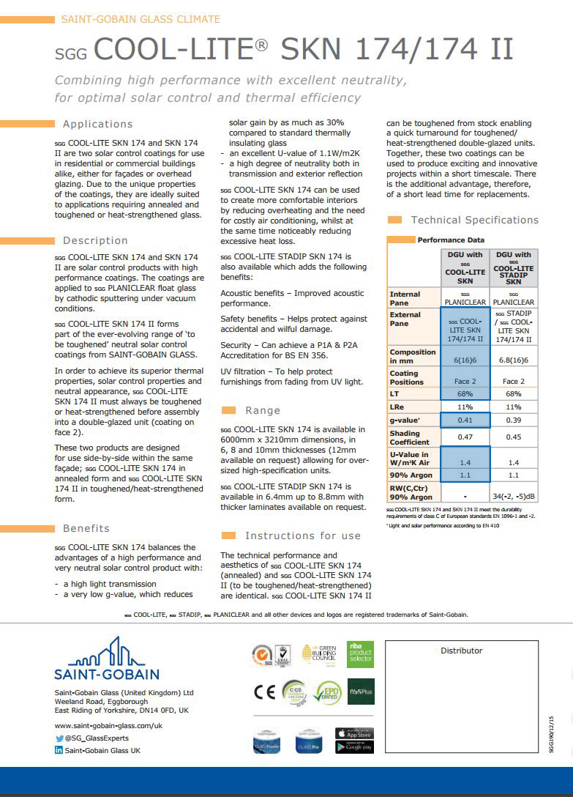
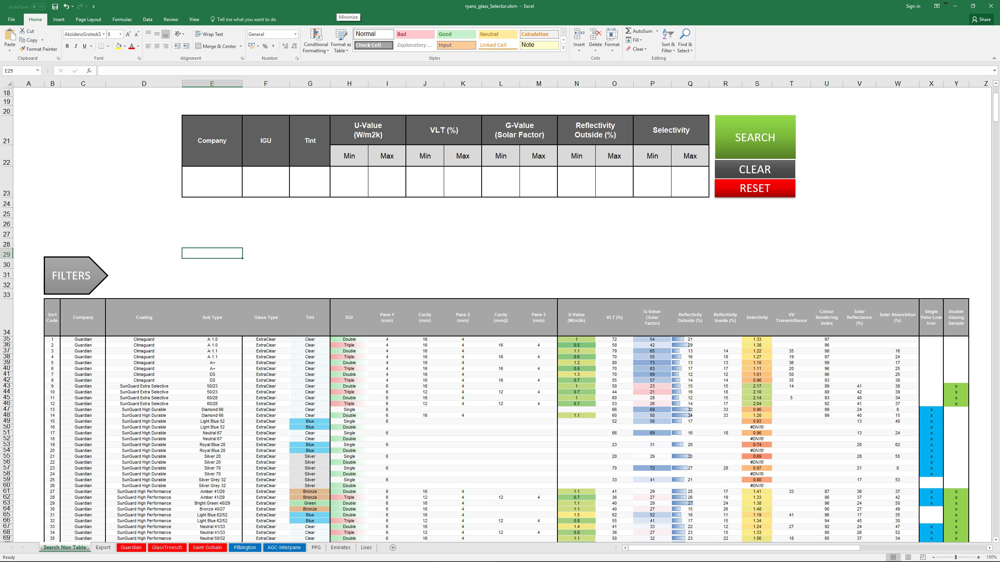

Glass Selector
Simplifying the process of selecting glass products
Some information has been omitted from this case study due to confidentiality. The views and information shown are based of my own opinions and findings, which are not necessarily representative of Foster+Partners
The Problem
My desk at F+P was located in a room filled with over 20,000
materials. One section of this room was devoted to double glazing
samples, with solar performance coatings applied to them.
These kind of coatings were of huge importance in the industry, not
only did they dramatically affect the visual aesthetic of the building,
but they also needed to conform to performance requirements in
order to meet regulations, and create a sustainable building.
Each company has their own format for presenting this information, there are multiple
products that achieve the same performance, there are different glass substrates, build-ups
and there is not a single centralised resource which allows for comparison between them.
My Role: Researcher, Designer and Developer
The Starting Point
Specifying glass into a building is a long and complicated process, and more often than not, non-linear. Although the architect would have been thought to be the driving force, they are often referred to as the conductor of an orchestra of specialties. In a practice with so many disciplines inegrated into, this is more true than ever:
The Architects
They have the vision for the building and need the glass to fit in with the bigger picture, relying on renders and mockups to make their selection
Environmental Engineering (EE)
EE needs the building to perform in the required ways, particularly to meet relevant codes and standards. Their laid out requirements must be me
Specialist Modelling Group (SMG)
In complex projects, they work on parametrically modelling geometry, and other aspects of design such as lighting or acoustics
Structural Engineering
Models the architects designs, adding structure and analysing to ensure suitability
Construction Review Group (CRG)
Reviews the final concept ensuring the specified design is suitable for construction
Sustainability Group
Evaluates the performance of the project in relation to any standards or qualifications that it is aiming for
Material Research Centre (MRC)
Supports the teams in choosing the correct materials, usually with the physical samples to evaluate
Visualisation
Creates all the visuals for the project, which are presented both internally and to clients
Whilst this is a big list of stakeholders, ultimately the architects and environmental engineers have the biggest influence on the decision making:
The architects would relay the feedback from the client, and concentrate feedback from the various other support teams on the project.
EE had "make or break" requirements, every building would have to comply with their laid out requirements, with no other acceptable outcome.
User Journeys
With the two primary users identified, I began to create user journeys for them. Unfortunately, as expected these aren't always straight forward. Not only do some projects take up to 7 years to complete, there are numerous interactions, with different elements put on hold and restarted. Speaking to the more experienced users who had worked on a few projects helped to piece together idealised journeys.
The Architect:

The Environmental Engineer:

In both of these situations, there's a lot of doubled work as well as stages that are repeated. Furthermore,
the projects can go on for some time, so meetings that take place, and the knowledge gained from discussions
with the specialists tend to get lost.
Importantly, the key information from the suppliers isn't held anywhere formally beyond emails and individual data sheets.
This results in multiple consultations with company representatives in order to gain the information they require whenever
the there's a change of requirements, but a lot of this information is static, and there's potential to access it much quicker.
Going to the Source
The next step was to understand the information that architects actually needed as at different stages, there are varying characteristics
that are considered for the glass product.
Towards the end of the specification process, it is inevitable that a company will be contacted
for information specific to that project. However in the first stages where vast ranges of glass are being selected from, there is a reliance purely
on the performance of the products.
In these cases, the datasheets produced by companies are the source of the decision making.
I began to look at the datasheets, below are examples of the format from two different companies with two comparable products highlighted:

Some of the differences between these two include:
●An individual datasheet compared to a datasheet for all products available
●There's overall differing format/layouts
●Different levels of detail for each product on characteristics
●Different naming conventions and terms for similar performing products
However there are multiple companies that offer products in this market, all suffering the same disparities as the above.
In my role at the time, I was fortunate to be in touch with these companies on a regular basis,
and so used my contacts to start to get the companies on board. This group included:

From discussions with them, I put together a database of all the datasheets from all the products of these companies.
One of the early issues was inconsistencies in data between the products, but also not all the information included was relevant.
Using some basic VBA, I turned this into a prototype tool that allowed the entire dataset to be searched. Although "Quick and Dirty",
it proved useful in establishing what would be useful for the users.

{kind=link}
Feedback
Interactivity

Dynamically selection was really well received, particularly being able to adjust the parameters to open up new results
Samples

Keeping track of what samples were in the library was implemented afterwards, as it was a question brought up frequently when the tool was being used
Information

The available search parameters were reduced over time to only the properties that were needed without impeding the usability
Prototyping
Moving forward with some of the outcomes from discussions, I began prototyping a solution which could handle the streamlined data and present this information in an easy to use way